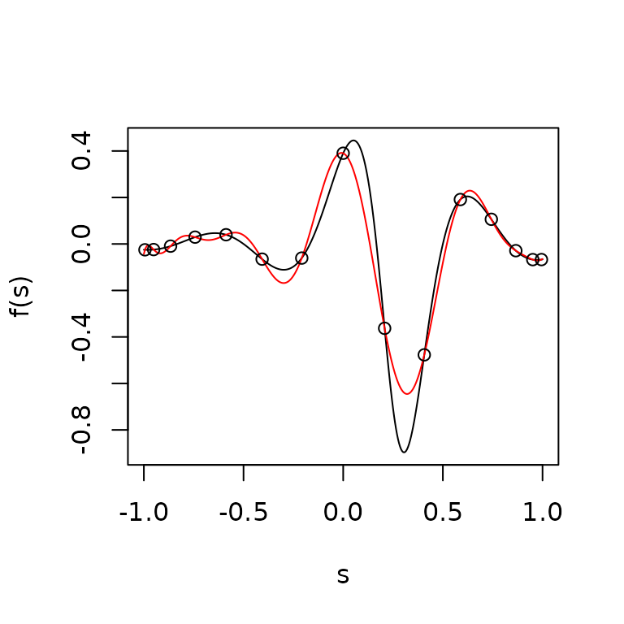
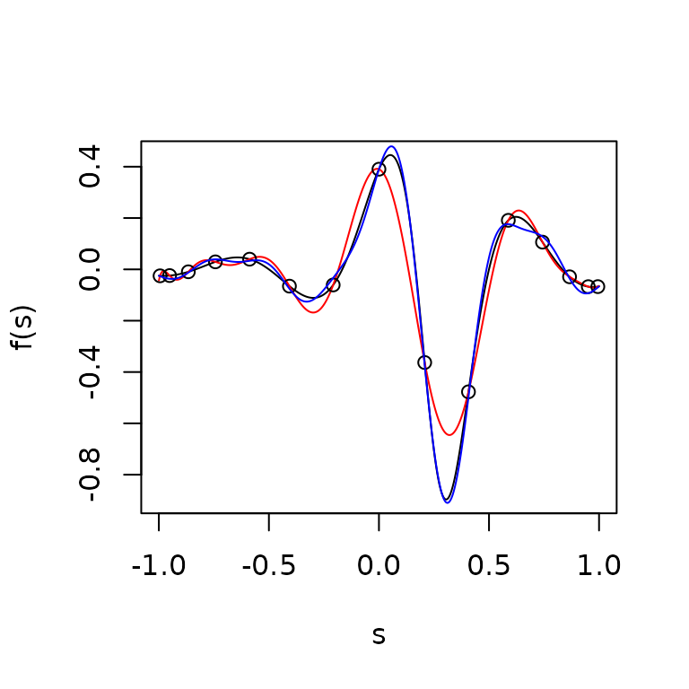
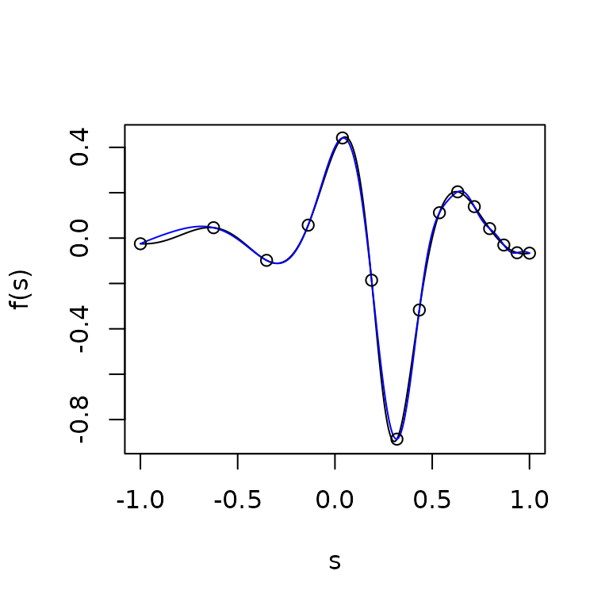
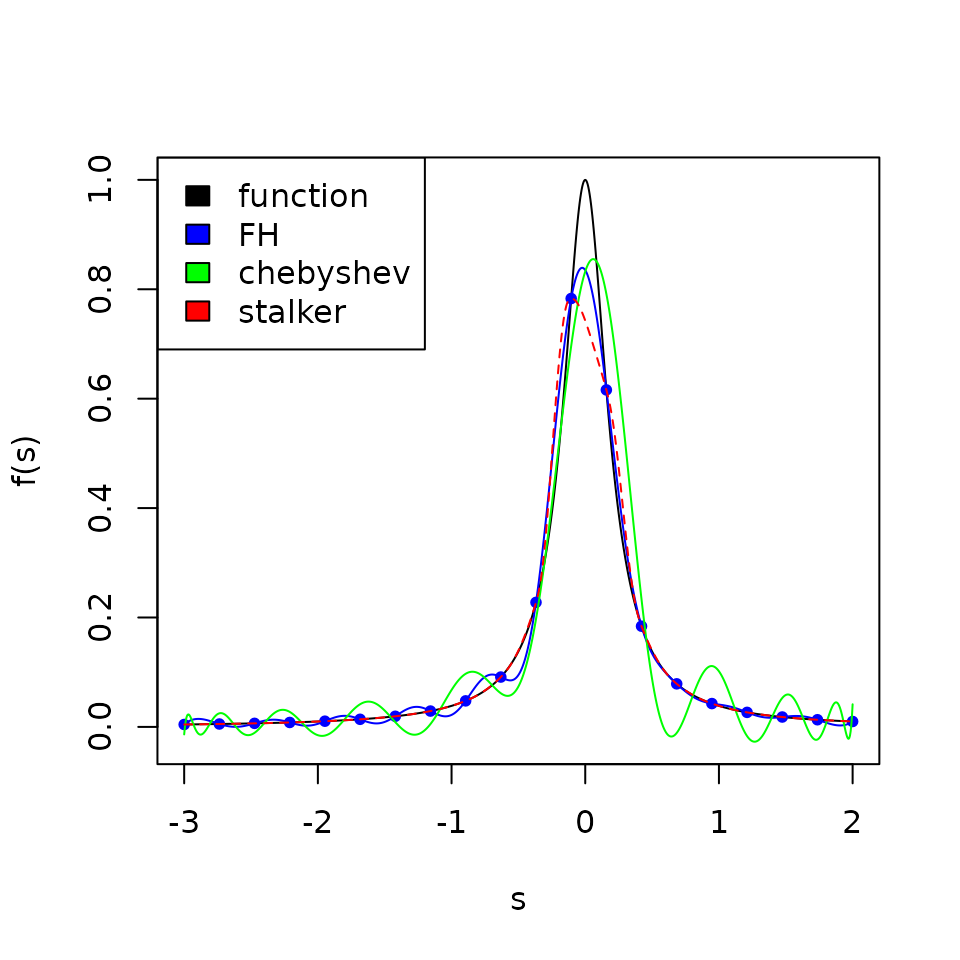
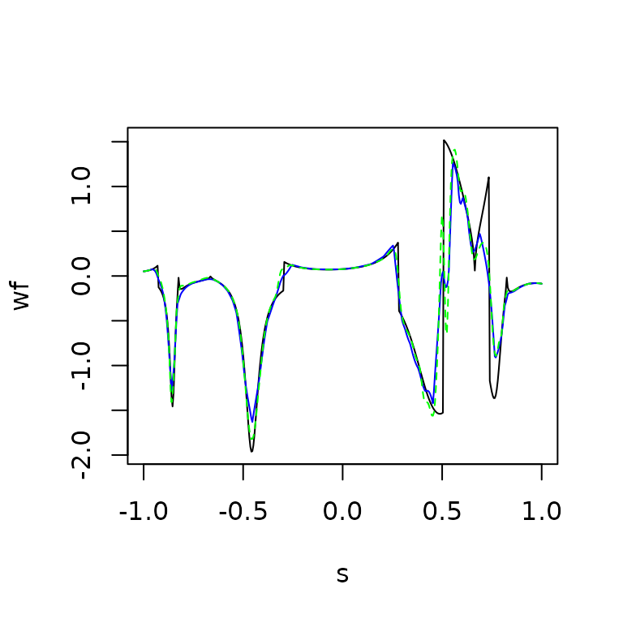
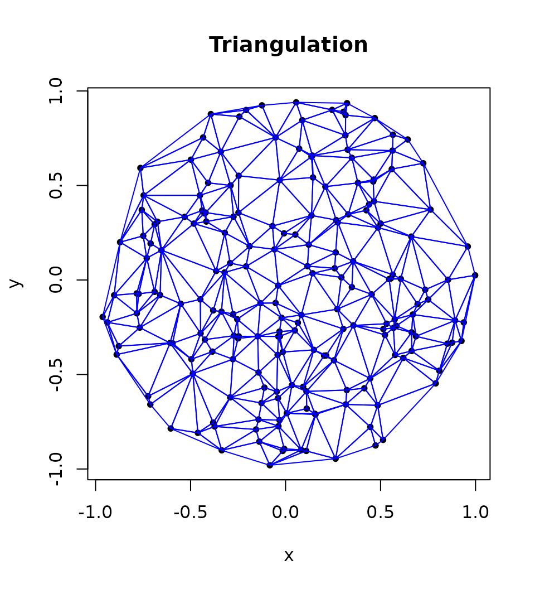
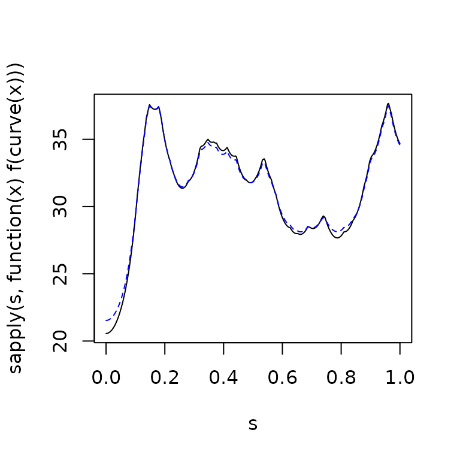

chebpol is a package for multivariate interpolation. The name is a misnomer, the package initially contained Chebyshev methods, now it contains several interpolation methods. Because the author disapproves of hand waving of the type “this can also be done in higher dimensions”, all of them are multivariate with any number of dimensions within the available resource limits.
Interpolation means that the approximating function it produces matches the original function in prespecified points, and try to fill in between the gaps. Thus, it is not smoothing like the mgcv package. The package produces R-functions which interpolate between given values; it is not intended for knot editing, cubature or symbolic differentiation, or similar tasks. This document outlines how chebpol works, and what it contains.
Introduction
We consider the problem of interpolating a continuous function \(f : [-1,1] \mapsto \mathbb{R}\) based on its values in \(n\) points \(\{x_i\}_{i=1..n}\) called knots. I.e. we want to find a reasonably behaved function \(P_f^n\) defined on \([-1,1]\) such that \(P_f^n(x_i) = f(x_i)\) for \(i = 1..n\).
A classical approach is to let \(P_f^n\) be a polynomial of degree \(n-1\) and find the coefficients by solving the linear system \(P_f^n(x_i) = f(x_i)\) (\(i = 1..n\)). However, high-degree polynomials do not always behave reasonably. In particular there is the Runge phenomenon: If the points \(x_i\) are uniformly spaced in \([-1,1]\) and one tries to interpolate the Runge function \(f : x \mapsto (1+25x^2)^{-1}\), there will be oscillations in \(P_f^n\) near the end-points. As \(n\) grows, the amplitude of these oscillations grow without bounds.
Most of the functionality in the package is reachable from the
function ipol.
Chebyshev interpolation
The classical solution to the Runge phenomenon is to use a particular set of knots, the Chebyshev knots \(x_i^n = \cos(\pi(i-0.5)/n)\) for \(i = 1..n\). This will ensure that \(P_f^n\) will converge uniformly to \(f\) as \(n \to \infty\), provided \(f\) is uniformly continuous. In this case one uses a special basis for the space of polynomials of degree up to \(n-1\), the Chebyshev polynomials \(\{T_i(x)\}_{i=0..n-1}\), which are orthogonal w.r.t to a suitable inner product. Due to a trigonometric identity, we have \(T_i(x) = \cos(i\cos^{-1}(x))\). The coefficients for these polynomials may be computed by a variant of the DCT-II transform. Thus, the method is fast.
More modern methods use splines, where the idea is to glue pieces of simple functions together, either low-degree polynomials or rational functions, subject to various constraints. Splines are in many respects superior to Chebyshev-interpolation.
For the multivariate case, where \(f : [-1,1]^r \to \mathbb{R}\), the DCT-II transform, being a variant of the Fourier transform, factors over tensor-products, so a natural choice is to use this tensor-product transform in the multivariate case. The knots are the Cartesian product of one-dimensional knots. This is a classical way to interpolate multivariate real functions.
This procedure is available in package chebpol. Either we have the function to interpolate, or we have the values in the Chebyshev-knots. Given a function \(f\) we may compute its Chebyshev approximation and plot it:
f <- function(x) cos(3 * pi * x) / (1 + 25 * (x - 0.25)^2)
ch <- ipol(f, dims = 15, method = "chebyshev")
s <- seq(-1, 1, length.out = 401)
plot(s, f(s), type = "l")
lines(s, ch(s), col = "red")
kn <- chebknots(15)[[1]]
points(kn, f(kn))
Even though there still are oscillations near the end points, their amplitude will diminish as \(n\) grows. The knots are the locations where the curves intersect.
In the multivariate case, the dims argument is a vector
of integers, the number of knots in each dimension. If we have the
values, not the function, we may pass those to ipol as an
array with the dim attribute correctly set.
If you look at the function ch returned by
ipol, you’ll notice that it has two arguments. The first
one, x, is the point at which you want to evaluate the
function. This x can also be a matrix where each column is
a point, the interpolation function can handle more than one point. In
the special case with a single argument function, any vector argument is
treated as a matrix with one row, i.e. a series of points, just like
ordinary R-functions like exp or sin.
The second argument to ch is called
threads, it defaults to
getOption("chebpol.threads"), and is the number of parallel
threads which should be used to compute the interpolations. Thus, above
we could have written lines(s, ch(s, 8)) to compute the 401
points in s in 8 threads. There is nothing to gain from
specifying more threads than there are CPUs in your computer, nor more
than there are input vectors. The interpolants produced by
chebpol has a threads-argument. The
chebpol.threads option is initialized from the environment
variable CHEBPOL_THREADS when the package is loaded.
Uniformly spaced grids
In some applications it is not feasible to evaluate the function \(f\) in the Chebyshev knots. Rather it may have to be evaluated on a uniformly spaced grid. To avoid the Runge phenomenon, chebpol transforms the domain of the function as follows.
A fairly simple function exists which monotonically maps uniform grid points into Chebyshev knots. It’s \(g : x \mapsto \sin\left(\frac{\pi x (1-n)}{2n}\right)\). We omit the dependence on \(n\) to avoid clutter. This \(g\) has the property that for Chebyshev knots \(x_i^n\) and a uniform grid \(y_i^n = -1 + 2(i-1)/(n-1)\) we have \(g(y_i^n) = x_i^n\) for \(i=1..n\).
Thus, given a function \(f\) to interpolate on a uniform grid, we construct the function \(h : x \mapsto f(g^{-1}(x))\). We then create the Chebyshev approximation \(P_h^n\) which requires \(h\) to be evaluated in the Chebyshev knots \(x_i^n\), but \(g^{-1}(x_i^n) = y_i^n\) are the uniform grid points, so \(f\) is evaluated there. We then use the function \(Q^n : x \mapsto P_h^n(g(x))\) for interpolation.
It is readily verified that for \(i=1..n\) we have \(Q^n(y_i^n) = f(y_i^n)\), thus \(Q^n\) agrees with the function \(f\) on the uniform grid. This is no longer a polynomial interpolation, so the Runge phenomenon is not necessarily present.
Continuing the former example, we have
plot(s, f(s), type = "l")
lines(s, ch(s), col = "red")
points(kn, f(kn))
uc <- ipol(f, dims = 15, method = "uniform")
lines(s, uc(s), col = "blue")
For the multivariate case, a separate map function g is
created for each dimension, which may have different number of knots.
One could imagine a case where some dimensions are evaluated on
Chebyshev grids, whereas other dimensions are evaluated on uniform
grids. Although chebpol has no ready-made wrapper
function to do this, it is not particularly difficult to achieve.
Non-standard hypercubes
Often, the domain of the function is not \([-1,1]\), but rather some other interval
\([a,b]\). This interval may be
affinely mapped onto \([-1,1]\) by
\(x \mapsto (2x-(a+b))/(b-a)\). For the
multidimensional case this may be done for each dimension separately.
The functions in chebpol have an optional
intervals argument, a list of such intervals, one for each
dimension, to support such hyper-rectangles.
In principle, the same could be done with infinite intervals, with e.g. a mapping \((-\infty,\infty) \mapsto (-1,1)\) like \(x \mapsto \frac{2}{\pi}\tan^{-1}(x)\), but chebpol does not implement it.
A multivariate example
Let \(f\) be the function \(f : (x,y) \mapsto \log(x)\sqrt{y}/\log(x+y)\) defined on \([1,2] \times [15,20]\). Let’s approximate it with 5 knots in \(x\) and 8 in \(y\) and see how it fares in a random point:
library(chebpol)
f <- function(x) log(x[[1]]) * sqrt(x[[2]]) / log(sum(x))
ch <- ipol(f, dims = c(5, 8), intervals = list(c(1, 2), c(15, 20)), method = "chebyshev")
uc <- ipol(f, dims = c(5, 8), intervals = list(c(1, 2), c(15, 20)), method = "uniform")
tp <- c(runif(1, 1, 2), runif(1, 15, 20))
cat("arg:", tp, "true:", f(tp), "ch:", ch(tp), "uc:", uc(tp), "\n")## arg: 1.08075 19.17167 true: 0.1130275 ch: 0.1129199 uc: 0.09091948Arbitrarily spaced grids
In some applications not even uniformly spaced grids are feasible. In
this case we do something similar as in the uniformly spaced case. We
have grid-points \(\{y_i\}_{i=1..n}\)
in ascending or descending order. We then use splinefun in
package stats with method = "hyman" to
create a monotone function \(g\) from
the grid-points \(\{y_i\}_{i=1..n}\) to
the Chebyshev knots \(\{x_i^n\}_{i=1..n}\). Otherwise, the same
method as for uniform grids are used.
The method "general" performs this procedure. In the
multivariate case, it is assumed that the grid in each dimension is
arbitrary, but the multi-dimensional grid is still a Cartesian product
of these. We may test this on a non-uniform grid.
f <- function(x) cos(3 * pi * x) / (1 + 25 * (x - 0.25)^2)
gr <- log(seq(exp(-1), exp(1), length = 15))
chg <- ipol(f, grid = gr, method = "general")
plot(s, f(s), col = "black", type = "l")
lines(s, chg(s), col = "blue")
points(gr, f(gr))
Floater-Hormann interpolation
An old interpolation method due to Lagrange is polynomial, but written so that one does not need to see any polynomial. Given function values \(f_i = f(x_i)\) in some points \((x_i)_{i=0}^N\), the interpolant can be written in barycentric form:
\[L(x) = \frac{\sum_{i=0}^N f_i \frac{w_i}{(x-x_i)}}{\sum_{i=0}^N \frac{w_i}{(x-x_i)}},\]
where the \(w_i\)’s are weights. It
so happens that if the points \(x_i\)
are \(x_i = \cos(i\pi/N)\), the
Chebyshev points of the second kind, the weights have alternating signs,
with absolute values \(|w_0| = |w_N| =
1\), and \(|w_i| = 2\) for \(0 < i < N\). See e.g. (Berrut and Trefethen 2004). In (Floater and Hormann 2007, eq. 18) another set
of weights which corresponds to certain blending polynomials in rational
interpolants are found. This is used in method "fh". Here
is an example with a Runge function. The depicted “stalker”
interpolation is an attempt at a shape preserving interpolation
described in another vignette.
f <- function(x) 1 / (1 + 25 * x^2)
# Uniform grid:
unigrid <- list(seq(-3, 2, length.out = 20))
uni <- ipol(f, grid = unigrid, k = 2, method = "fh")
st <- ipol(f, grid = unigrid, method = "hstalker")
ch <- ipol(f, dims = 20, intervals = c(-3, 2), method = "chebyshev")
s <- seq(-3, 2, length.out = 1000)
plot(s, f(s), ylim = range(uni(s), f(s), ch(s)), typ = "l")
lines(s, uni(s), col = "blue")
points(unigrid[[1]], uni(unigrid[[1]]), col = "blue", pch = 20)
lines(s, ch(s), col = "green")
lines(s, st(s), col = "red", lty = 2)
legend("topleft", c("function", "FH", "chebyshev", "stalker"), fill = c("black", "blue", "green", "red"))
Multilinear interpolation
For demanding functions chebpol also contains a
multilinear interpolation. A multilinear function is a function \(f(x_1,x_2,...,x_n)\) such that for each
\(i=1..n\) the function \(g_i(x) =
f(x_1,...,x_{i-1},x,x_{i+1},...,x_n)\) is of the form \(ax+b\) for every choice of the \(x_i\)s. A typical example is \(f(x,y,z) = xyz + xy + 2yz - x + 2\). The
method "multilinear" may take either a function or function
values as its first argument and create a piecewise multilinear
interpolation. It is a straightforward implementation which interpolates
a point by a convex combination of the function values in the corners of
the surrounding hypercube. We try it out on an intricate function on
\([-1,1]^4\) and evaluate the result
along an intricate parametric curve. Of course, if one is interested in
this particular curve, one could interpolate along it instead. This is
just an example of multilinear interpolation.
f <- function(x) {
sign(sum(x^3) - 0.1) *
sqrt(abs(25 * prod(x) - 4)) /
(1 + 25 * sum(x)^2)
}
grid <- replicate(4, list(seq(-1, 1, length = 15)))
ml <- ipol(f, grid = grid, method = "multilinear")
st <- ipol(f, grid = grid, method = "hstalker")
s <- seq(-1, 1, length = 400)
curve <- function(x) c(cos(1.2 * pi * x), sin(1.5 * pi * x^3), x^2, -x / (1 + x^2))
wf <- sapply(s, function(x) f(curve(x)))
wml <- sapply(s, function(x) ml(curve(x)))
wst <- sapply(s, function(x) st(curve(x)))
plot(s, wf, typ = "l") # function
lines(s, wml, col = "blue") # multilinear interpolation
lines(s, wst, col = "green", lty = 2) # hyperbolic stalker
Scattered data
In some cases multidimensional data points are not organized in a grid, rather they are scattered. For this case, chebpol has two methods.
Simplex linear interpolation
The first one is linear in simplices. A Delaunay triangulation is created from the scattered data, i.e. a simplicial complex (a collection of triangles, tetrahedra, and their higher dimensional analogues). When evaluating the interpolant, the simplex enclosing the point is found, and the value in the point is a convex combination of the function values in the corners of the simplex, with the weights being the barycentric coordinates of the point. We create a function defined on the unit circle, and put some random knots in there, and see what the Delaunay triangulation looks like.
f <- function(x) sqrt(1 - sum(x^2))
theta <- runif(200, 0, 2 * pi)
r <- sqrt(runif(200))
knots <- rbind(r * cos(theta), r * sin(theta))
g <- ipol(f, knots = knots, method = "simplexlinear")
# yank out the simplices for drawing
simp <- get("dtri", environment(g))
drawtri <- function(pts, col) lines(c(pts[1, ], pts[1, 1]), c(pts[2, ], pts[2, 1]), col = col)
plot(knots[1, ], knots[2, ], typ = "p", pch = 20, xlab = "x", ylab = "y", main = "Triangulation")
invisible(apply(simp, 2, function(kn) drawtri(knots[, kn], col = "blue")))
theta <- runif(7, 0, 2 * pi)
r <- sqrt(runif(7))
test <- rbind(r * cos(theta), r * sin(theta))
rbind(true = apply(test, 2, f), sl = g(test, epol = TRUE))## [,1] [,2] [,3] [,4] [,5] [,6] [,7]
## true 0.8573409 0.9569339 0.7836407 0.9354700 0.6468739 0.8716940 0.5273634
## sl 0.8482392 0.9502945 0.7746896 0.9315686 0.6292800 0.8657017 0.5065331The main shortcoming of this method is visible in the Delaunay triangulation. Some of the triangles near the borders are very stretched out. This can happen even if we have a large number of knots. This is because the triangles must cover the convex hull, and there is no other way to do that. Such long simplices will lead to poor linear approximation if second derivatives there are large. Another shortcoming is that the entire triangulation is computed when the interpolant is created, not only the parts needed for interpolating specific points. The number of simplices grows with the dimension \(d\), typically as \(d!\). This quickly gets out of hand when \(d\) grows.
By default, the interpolant will return NA for inputs
which are outside the convex hull of the knots, but an extrapolation
from the nearest simplex will be done if the argument
epol = TRUE is specified.
Polyharmonic splines
The other scattered method is polyharmonic splines in the method
"polyharmonic". It accepts a function, or function values,
and a matrix of centres (knots), one centre in each column. Here is a
20-dimensional example with 3000 randomly placed knots:
r <- runif(20)
r <- r / sum(r)
f <- function(x) 1 / mean(log1p(r * x))
knots <- matrix(runif(60000), 20)
phs <- ipol(f, knots = knots, k = 3, method = "polyharmonic")
rr <- runif(20)
curve <- function(x) abs(cos(5 * pi * rr * x))
s <- seq(0, 1, length.out = 1000)
plot(s, sapply(s, function(x) f(curve(x))), typ = "l")
lines(s, sapply(s, function(x) phs(curve(x))), col = "blue", lty = 2)
The "polyharmonic" method fits a function of the form
\(P(x) =
\sum_{i=1}^n w_i \phi(\|x-c_i\|) + L(x)+c\) such that \(P(c_i) =
f(c_i)\) for each \(i\) where
the \(c_i \in \mathbb{R}^d\) are the
knots, \(\|\cdot\|\) is the Euclidean
norm on \(\mathbb{R}^d\), \(w_i \in \mathbb{R}\) are weights, \(L\) is linear \(\mathbb{R}^d\mapsto \mathbb{R}\), and \(c\in \mathbb{R}\) is a constant. \(\phi\) is the function \(\mathbb{R}^+ \mapsto \mathbb{R}\)
\[ \phi(x) = \begin{cases} x^k &\text{when \(k\in\mathbb{N}\) is odd,}\\ x^k \log(x) &\text{when \(k\in\mathbb{N}\) is even,}\\ \exp(kx^2) &\text{when \(k < 0\).} \end{cases} \]
Note that this differs from some other expositions, which use \(2m-d\) as exponent for a natural number \(m\).
For \(k=2\), we get the thin plate spline. Note that the fitting may fail, in particular for \(k < 0\) and irregular data. In this case a least squares fit is used, and a warning is issued. The \(k\) parameter then may need to be tuned for the problem at hand. Note that by default the knots and coordinates are transformed into a unit hypercube if any of the knots are outside. Note also that for positive \(k\) the theory in (Hangelbroek and Levesley 2013, Proposition 6) says that there are enough splines even if we do not scale, but the numerics may be more favourable when we scale. There is more about polyharmonic splines in (Rabut 1992).
There do exist some acceleration schemes for low dimensions, but the current implementation does not use any. It is an entirely straightforward implementation which fits by solving a linear system, and evaluates the \(P(x)\) directly.